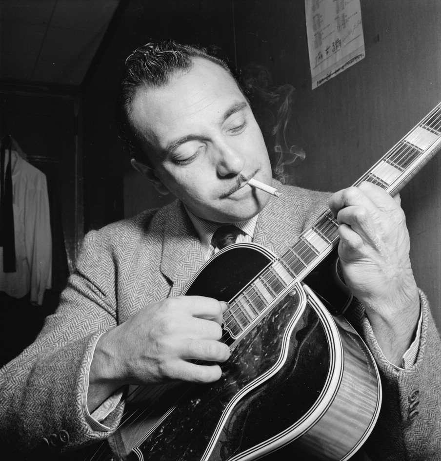

Einführung in Django
Was ist Django und wofür braucht man das?
made by Arne Schauf @asmaps
Übersicht
- Was ist Django?
- ORM & Models
- Forms & Validierung
- ModelForms
- Admin Interface
- SyncDB & Migrations
- Hilfreiche Apps
- Deployment
- Seiten in Django
- Alternativen
- Where to start?
Was ist Django?
Django Reinhardt
* 23.1.1910✝ 16.5.1953
"The Web framework for perfectionists with deadlines."
- High-level Webdevelopment Framework
- Komplett in Python geschrieben
- DRY-Prinzip
- Python 3 Support
- BSD Lizenz
Konzept
MVT - Model, View, Template(, Controller)
- Model: Verbindung zur DB durch den ORM
- View: Verarbeitung eines Requests
- Template: Rendern von HTML mit Variablen
- (Controller: URL-Dispatcher)
Architektur
Where to start?
Online-Tutorials:
http://twoscoopspress.com/pages/django-tutorials
Buch: Two Scoops of Django
Diese Präsentation:
https://www.as-webservices.de/technik/django/
Danksagung
Hakim El Hattab:
reveal.js
Markus Zapke-Gründemann:
http://www.django-introduction.com/
Bildquellen
- Django und das Django Logo sind eingetragene Warenzeichen der Django Software Foundation
- Django Reinhardt Porträt: Wikimedia Commons/William P. Gottlieb (gemeinfrei)
.jpg){kind=link}
Lizenz
Dieses Werk steht unter einer
Creative Commons
Namensnennung - Weitergabe unter gleichen Bedingungen 3.0 Unported Lizenz